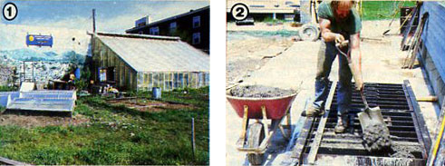
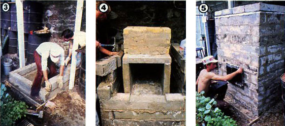
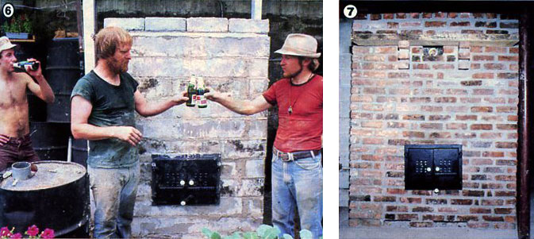

Now, there's a design that takes the drudgery out of building an effective masonry heater:
As alternatives to the notoriously inefficient open fireplace, steel and cast-iron wood stoves have a deservedly strong reputation. Unfortunately, the rise in popularity of the metal heaters seems, in some cases, to have left the impression that masonry is an inherently inferior material from which to build a wood burning appliance. Not so!
As a matter of fact, steel and iron have a number of disadvantages when it comes to providing a housing in which efficient, clean combustion takes place. For one, neither material has a high heat-storage capacity when compared with any cement mixture. Consequently, the output of a metal appliance all too closely mirrors the inconsistent burning conditions inside the heater. Furthermore, steel and iron have a high rate of heat transfer. Now that's a fine thing in the right place (after all, you do want that warmth to get into your house, not out the chimney!), but inside the firebox too rapid dispersion of heat can result in reduced combustion efficiency-possibly even quenching the flame sand increased pollutant emissions. And finally, metal heaters have a relatively short life span, while-as anyone who lives in an old house with fireplaces can attest-masonry products survive very well under the adverse conditions of coal or wood burning.
HEAT FOR THE MASSES
Those of you who are regular MOTHER readers are probably already aware that a Russian fireplace solves many of the problems inherent in metal wood stoves and provides an effective source of heat. A massive masonry heater such as the one we built in "My MOTHER's House" (see issue 77, page 130) is efficient, clean, and requires a minimum of upkeep. Still-as you may also remember-our Russian fireplace is built of more than 1,000 bricks, and has developed a number of cracks (none yet leaks smoke, though). Properly assembling such a huge heater is a complicated and time-consuming enterprise. Indeed, in many parts of the country today, masons are charging upward of $3,500 to build one.
All of this leads to a have-your-cake-and-eat it question: Is it possible to have a good masonry heater that's not too troublesome or costly to build? That's what puzzled Fred Fitzpatrick, an apprentice of Albie Barden (who's one of the renowned experts on massive masonry wood burners). Fred learned the liabilities of brick as a material for building Russian fireplaces when he assembled more than a dozen such heaters in his Groton, Massachusetts area ... including one (which Albie helped him erect) in his own living room. So Fitzpatrick--a fount of energy who builds masonry heaters as a sideline from his vocation as a biology teacher at a Boston inner-city school and from his avocation as a naturalist and leader of river trips in the region began looking for a better approach. And what he's developed, we think you'll agree, is just that!
MASONRY FOR NONMASONS
Fred had a clear set of goals in mind when he began to search for an alternative to the common brick: First, he needed something that would allow a masonry heater to be built quickly in spite of its convoluted heat exchange path. (With all of his occupations and hobbies-including cooking gourmet meals for a budding family, raising livestock, and maintaining an ambitious garden -this man doesn't have time on his hands!) An equally important constraint was the need to cut down the two- to four-month curing time required for brick heaters. In addition, the material had to be easy to work with, since Fred had already determined that his own masonry bent was more structural than decorative. And last, the ideal "ingredient" would also be capable of withstanding greater thermal stress than brick can, to allow rapid and extreme heating without attendant cracking.
Refractory concrete was the obvious choice. It could be cast in a backyard . . . mixed to cure sufficiently in a very short time . . . and expected to withstand intense thermal stress. So, by applying some of his graduate training in chemistry and an equal dose of experimentation, Fred came up with a special refractory cement mixture. He designed his own forms-set on a specially leveled concrete platform-to produce the largest blocks that he could handle practically: 150-pound segments. The steel molds in which the blocks are formed have keys built in so that the sections can be laid up to interlock . . . yielding a masonry box that's 48" square on the outside. In addition, special forming sections produce blocks with round holes for stovepipe exits and with notches to which the cast-iron doors (which Fred also designed) can be mounted.
The 17" X 19" X 36" firebox consists of five special blocks, made from a somewhat different mixture, each of which weighs well over 200 pounds. The smoke exits from the top of this inner chamber into a rectangular flue (built up from firebrick) that leads to the roof of the heater. From there, as in the Finnish contra-flow design, the gases are forced to flow down the side walls of masonry and exit from the fireplace through an exterior round opening that's beneath the firebox. A combination of stovepipe and insulated factory-built chimney is then used to exhaust the combustion products from the house.
HOW QUICK?
After more than three years of testing, Fred finally decided to go commercial with his Siberian Fireplace. So in late May of this year, one of MOTHER's staff members visited Fitzpatrick's home-based operation for a firsthand look. Our staffer participated in the construction of a Siberian Fireplace, and got to see for himself the speed with which one can be assembled. The blocks for this particular heater were cast Friday evening after Fred got home from school (the project was begun by his neighbor, Ron Stanton) and on Saturday morning. Saturday night, Fred and his newly conscripted assistant (MOM's staffer) loaded the roughly 3-1/2 tons of concrete blocks into a stake bed truck, along with tools, mortar, a wheelbarrow, and various other items. And by 6:00 AM the following morning, they and mason's assistant Tom Krause were on their way to the Southwest Corridor Community Farm and Greenhouse in Jamaica Plains, Massachusetts.
Work commenced shortly before 8:30 AM, as the first course of blocks was buttered (with a mortar made up of more refractory cement) and laid onto the 4-1/2'square slab that had previously been poured in the greenhouse. With one full-time helper and another "composite" one-in the form of either Leroy Stoddard (the farm manager), Bob Rochlin (one of Fred's fellow teachers), or our staff member-the heater rose quickly through ten courses. In less than four hours the lid of ceramic insulation, steel plate, and cement slabs was in place! According to Siberian Fireplaces' proprietor, the heater could have been fired the following afternoon, if necessary.
A completely installed Siberian Fireplace now costs between $2,200 and $2,500 . . . as compared with the $3,500 that Fred used to charge for the material plus two weeks of labor needed to build a massive heater from brick. The customer not only saves $1,000, but also gets what Fitzpatrick considers to be a superior appliance. What's more, the rapid and strenuous construction suits Fred's own inclinations. He moves ten tons of block on an average working weekend . . . a work load that's used up numerous relatives and assistants. Fred doesn't seem to mind all the lifting. Rather, he points to an advantage of building the hefty heaters: "They're guaranteed against theft."
PERFORMANCE
Fitzpatrick's own household actually has two Russian-type fireplaces now. There's the original brick unit that Fred assembled with Albie Barden back when the family was building its 3,000-square-foot gambrel roofed home, and there's the Siberian block one that Fred built in the basement in the summer of 1981. Through the winters of 1982 and '83, their home was heated exclusively by the basement unit, and the residents kept records of temperatures and loading procedures.
Unlike brick-built heaters, Fred's Siberian stove's ample firebox can be loaded with large logs. A typical fire consists of six 6" X 36" pieces of pine that burn so rapidly they're reduced to coals in only 45 minutes. During that initial intense fire, the temper ature on the inside wall of the firebox will reach 1700 °F . . . yet the gases exiting the stove will be only 170°F! This loading pro cedure is repeated twice more to raise the exterior walls of the heater to 230 230'F. The heated mass can then maintain the Fitzpat ricks' house at a comfortable temperature (in January) for 21 hours.
Of course, the huge heat-exchange area available in a massive masonry heater results in very high heat-transfer efficiency. In addition, the high-temperature burns produce extremely efficient combustion . . . with the side benefit of almost no creosote deposit. (Fred has never had to clean his chimney.)
And for the Fitzpatricks--and other Boston area owners of Siberian Fireplaces there's a further benefit to this efficiency and cleanliness: They can burn "low grade" wood. People with metal heaters avoid using pine and green hardwood because of those fuels' reputations for creosote production and low heat content. This prejudice goes so far that local tree trimmers and contractors clearing land must pay a substantial sum to dump such wood at a landfill, but Fred and his customers generously allow the cutters to leave piles in their yards . . . as long as the trees are trimmed to 36 inches in length. Consequently, over the last three winters, Fred hasn't had to cut or purchase any fuel wood, and only rarely does he need to split pieces to fit them into his heater.
And that fuel delivery service leaves Fred free to put his prodigious energies into building more Siberian Fireplaces . . . so that, for a very reasonable price, other people can spend their winters in cozy comfort.
We do not have plans for Fred's masonry heater. You can find more information and how-to on masonry heaters by searching masonry heaters at www.Google.com. Also, Maine Wood Heat offers a masonry heater do-it-yourself plan.
|
 1. A Siberian Fireplace was installed at the Southwest Corridor Community Farm and Greenhouse. |
 3. The 150-pound masonry units are keyed to interlock 4. Smoke rises from the firebrick flue, curls down the sides and exits from teh bottom rear. 5. Fred Fitzpatrick makes his own doors for the unit. |
 6. Each successful installation is toasted. 7. The Fitzpatrick firebox has a brick facade. |